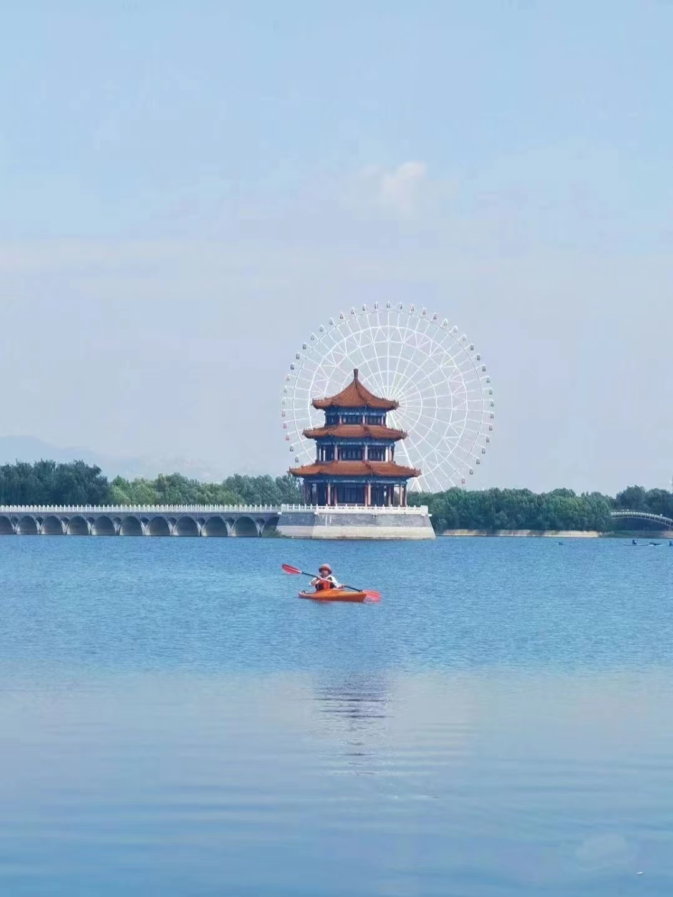
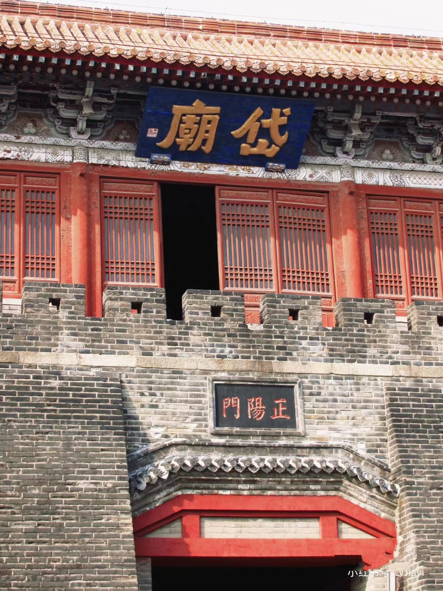

一、泰山
泰山古称“岱宗”、“岱山”，世称“东岳”，为“五岳之首”、“五岳独尊”。 位于山东省中部，绵亘于泰安、济南、淄博三市之间，面积2.42万公顷。 主峰海拔1532.7米。国家AAAAA级旅游景区。
泰山四大奇观是：泰山日出、云海玉盘、晚霞夕照和黄河金带。

二、东平湖风景区
东平湖风景区位于山东省泰安市东平县境内，面积627平方公里，国家AAAA级旅游景区。 是《水浒传》中八百里水泊的唯一遗存水域。 东平湖风景区主要包括水浒影视城、聚义岛、六工山水浒大寨、千年宋城、 腊山国家森林公园、昆山景区、黄石悬崖景区、洪顶山摩崖石刻等100余处景区景点。 东平湖风景区西依京杭大运河，东连大汶河，北通黄河。 她过去是漕运要枢，现在蓄水滞洪，无论过去和现在她都起到重要作用。 对于即将实施的我国南水北调东线水利工程，东平湖将起到更为重要作用。
三、泰山天颐湖旅游度假区
泰山天颐湖旅游度假区坐落在山东省泰安市岱岳区满庄镇。 水面6平方公里，占地20平方公里。国家AAAA级景区。
泰山天颐湖旅游度假区建有泰山花海、泰山世界古典汽车博览馆、梦想小镇、 摩玛梦想城、泰山天颐湖飞行体验馆、如意画廊、无边际泳池、10万平休闲沙滩、 环湖游船、月伴湾、十里花堤等景点。

四、岱庙
景区主体建筑天贶殿，创建于宋代，采用中国古代建筑最高规格营造，为中国古代三大宫殿式建筑之一。 殿内大型壁画泰山神启跸回銮图，是中国道教壁画的上乘之作。 据2023年5月5日官网显示，岱庙存有自秦汉以来的历代碑碣石刻211通， 有古树名木200余株。是泰山历史文化的缩影，具有重要的历史、艺术、科学价值。